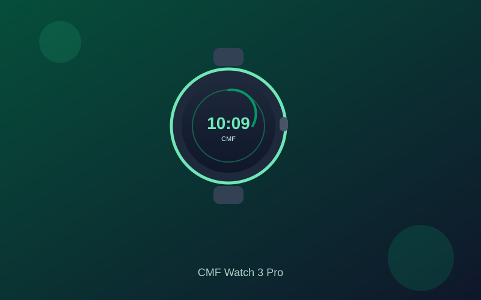

CMF Watch 3 Pro Review: Stylish Round Design and Long Battery Under $150
The CMF Watch 3 Pro brings Nothing’s signature minimalist aesthetic, a crisp 1.43-inch AMOLED display, dual-band GPS, and up to 13 days of battery life to a price that regularly sits under $100.
Budget smartwatches often blend into the background with similar square faces and generic software. The CMF Watch 3 Pro from Nothing’s CMF line stands apart with a clean round dial, distinctive bezel detailing, and a refined interface that feels more intentional than most devices in its class. Street pricing frequently lands between $79 and $99, keeping it comfortably inside the under-$150 range.
The 1.43-inch AMOLED screen is bright and sharp enough for everyday glances at the time, notifications, and workout metrics. Peak brightness supports outdoor readability, while the round layout and customizable watch faces keep the experience visually interesting without clutter. Navigation stays responsive for daily tasks, and the overall weight and thickness remain reasonable for all-day wear.
Battery life is a practical highlight. Nothing claims up to 13 days of typical use; real-world results commonly return a solid week or more depending on GPS sessions, always-on display settings, and notification volume. Even with regular activity tracking and Bluetooth calling, most users avoid daily charging. The companion app handles setup and health data cleanly across Android and iOS.
Fitness features cover heart rate, SpO2, sleep staging, stress, and more than 130 sport modes with dual-band GPS for more reliable outdoor tracking. Bluetooth calling and message notifications work reliably, while the software stays focused on health and activity rather than a full app store. This keeps the experience lightweight and predictable, though it means fewer third-party integrations than Wear OS alternatives.
If you want a distinctive design, reliable multi-day battery, and competent tracking without climbing into premium smartwatch pricing, the CMF Watch 3 Pro is one of the clearer values under $150. It is not a full-featured platform replacement, but for style-conscious buyers who prioritize everyday utility and endurance it delivers consistent results at a price that is easy to justify.
Key Takeaways
- Price Range: ~$79 – $100 (Amazon)
- Display: 1.43-inch AMOLED, crisp and outdoor-readable
- Battery: Up to ~13 days typical use
- Features: Dual-band GPS, heart rate/SpO2/sleep tracking, 130+ sport modes, Bluetooth calling